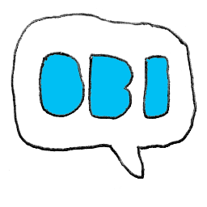
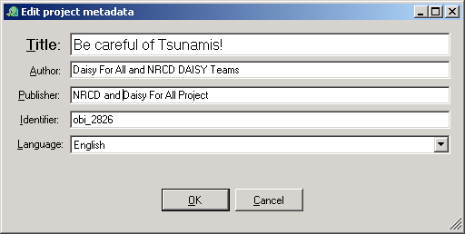
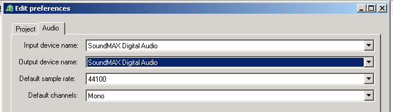
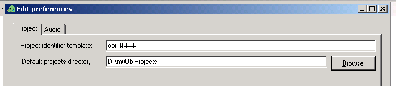
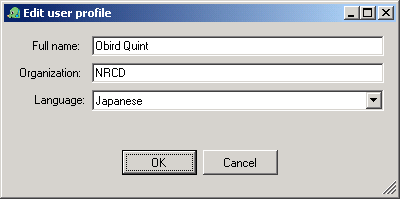

Obi Manual

Obi Manual - Table of Contents
Obi - DAISY/NISO DTB Production Tool
What is Obi?
Obi Online - Community Help and Support
For further help and support on using Obi, please visit Obi online.
Getting Started
Main Window Overview
The TOC View
The Strip View
Setting Preferences
Create a New Project
Record and Edit the Project
Save the Project
Please enjoy the DAISY/NISO DTB
Obi Windows - details
Main Window
TOC View
Strip View
Record Dialog
Play Dialog
Split Dialog
The metadata dialog allows editing of bibliographic metadata to be associated with the project.
It is strongly suggested that you take time to fill these fields in properly.
Metadata Dialog fields
- Title
- A name given to the resource. Typically, Title will be a name by which the resource is formally known.
- Author
- An entity primarily responsible for making the content of the resource. Examples of Creator include a person, an organization, or a service. Typically, the name of a Creator should be used to indicate the entity.
- Publisher
- An entity responsible for making the resource available. Examples of Publisher include a person, an organization, or a service. Typically, the name of a Publisher should be used to indicate the entity.
- Identifier
- An unambiguous reference to the resource within a given context.
- Language
- A language of the intellectual content of the resource.

Preferences Dialog
The preferences dialog contains various settings relating to the project and the system. Obi will remember these settings between session, in other words, when you restart Obi or your computer, these settings will remain as you left them.
Audio Preferences
The audio preferences tab allows to view and modify settings relating to audio recording and audio playback.
Audio Preferences fields
- Input device name
- Set the audio device to use for recording. This is the same as selecting a soundcard input port
- Output device name
- Set the audio device to use for playback. This is the same as selecting a soundcard output port
- Default sample rate
- Select the sample rate to use for recording. This field defaults to
44100, and normally, you can leave it at that. Under some circumstances (such as a very large book being recorded) you may want to change this setting to 22050.
- Default channels
- Select whether you want to record in
mono (one channel of audio) or stereo (two channels of audio). Normally, DAISY DTBs are recorded in mono.

Obird suggestion
Changing sample rate and number of channels in the middle of a project is not a very good idea!
Try to make your choice before you start recording in the project! Then try to stick to your choice!
Project Preferences
The project preferences tab allows to view and modify settings relating to an Obi project.
Project preferences fields
- Project identifier template
- Obi can autogenerate an [href]identifier for your project. In this field, you can determine how the identifier should be generated.
You can add any characters that will occur everytime an identifier is generated, and combine these with a number of hash characters (#) that Obi will replace with numerals.
For example, if this field is set to obi_####, Obi will generate an identifier such as obi_9682.
- Default projects directory
- Select a directory on your computers harddrive that Obi will suggest as a project directory when you start a new project.

User Profile Dialog
User profile fields
- Full name
- Name of user
- Organisation
- Organisation of the user
- Language
- The language of the user (which is not necessarily the same as the [href]language of the DTB being recorded!).

Glossary of Terms
Obird suggestion
If the word you are looking for does not exist in this glossary, I suggest that you have a look in the DAISY Knowledge Network.
- Audio Block
-
A term used in Obi to describe segments of audio. See also [href]Block and [href]Phrase.
- Block
-
A term used in Obi to describe the smallest content unit of the [href]DTB being produced.
A block can for example be an [href]Audio Block, in which case it is equivalent to a [href]phrase.
Blocks are organised in [href]Strips.
- DAISY
-
An acronym that stands for Digital Accessible Information SYstem.
Read more at the daisy.org introduction area.
- DAISY/NISO
-
A name used to describe the type of [href]DTB produced by Obi, in other words, the particular standard specification used.
Read more at daisy.org standards area and the daisy.org introduction area.
- DTB
-
An acronym that stands for Digital Talking Book.
Read more at the daisy.org introduction area.
- Phrase
-
A term used to describe a small segment of audio within a DAISY DTB.
A phrase is typically equivalent to a spoken sentence, or a part of a spoken sentence.
In Obi, a phrase is equivalent to an [href]Audio Block.
- Section
-
A structural unit in the DTB being produced.
A section typically corresponds to a book chapter.
In Obi, sections are displayed and edited in the [href]TOC View and in the [href]Strip View.
- Strip
- A concept used in Obi to display the contents of a DTB [href]section. Strips occur in the [href]Strip View of the Obi main window.
- XUK File Format
- XUK is an acronym that stands for XML for Urakawa. This is a file format used while the [href]DTB is under production. When you save the project, by default a XUK file is created. Once the DTB is ready for publishing, the XUK file format is converted into a DTB.
Keyboard Shortcut Table
How keyboard shortcut syntax works
In the table below, all keyboard shortcuts of Obi are described using a standard syntax.
The key components of this syntax are:
- Sequences of keys to be pressed are described using the comma sign
- For example, ALT,F means: First press and release the ALT key, then press and release the F key.
- Key combinations (i.e. keys to be pressed simultaneously) are described using the plus sign
- For example, ALT+F means: Press the ALT and F key simultaneously, and then release them.
| Obi Main Menu |
| File Menu | ALT,F |
| Edit Menu | ALT,E |
| TOC Menu | ALT,C |
| Strips Menu | ALT,S |
| Tools Menu | ALT,T |
| Help Menu | ALT,H |
| File Menu |
| New Project | CTRL+N |
| Open Project | CTRL+O |
| Save Project | CTRL+S |
| Save Project as | CTRL+SHIFT+S |
| Close Project | CTRL+W |
| Exit | ALT+F4 |
| Dialogs and Windows |
| Open Record Dialog | ALT+R |
| Open Help | F1 |
| Open Metadata dialog | ALT+M |
| Open Audio Preferences | ALT+A |
| Open Project Preferences | ALT+P |
| Open User Profile Dialog | ALT+U |
| General editing operations |
| Undo | CTRL+Z |
| Redo | CTRL+Y |
| Touch project | CTRL+T |
| Main view |
| Hide TOC View | ALT+T |
| Show TOC View | ALT+T |
| Show in Strip View | ALT+V |
| Show in TOC View | ALT+V |
| Section Editing |
| Add section | CTRL+A |
| Add subsection | CTRL+B |
| Delete section | DEL |
| Rename section | F2 |
| Move Section Up | CTRL+SHIFT+UP |
| Move Section Down | CTRL+SHIFT+DOWN |
| Move Section In | CTRL+SHIFT+RIGHT |
| Move Section Out | CTRL+SHIFT+LEFT |
| Strip Editing |
| Add strip | CTRL+A |
| Rename strip | SHIFT+F2 |
| Delete strip | SHIFT+Del |
| Move strip up | CTRL+SHIFT+Up |
| Move strip down | CTRL+SHIFT+Down |
| Audio Editing |
| Play audio block | ALT+Space |
| Cut audio block | CTRL+X |
| Copy audio block | CTRL+C |
| Split audio block | CTRL+P |
| Merge with next audio block | CTRL+M |
| Delete audio block | DEL |
| Edit audio block label | F2 |
| Move audio block forward | CTRL+RIGHT |
| Move audio block backward | CTRL+LEFT |
| Import audio file | CTRL+I |